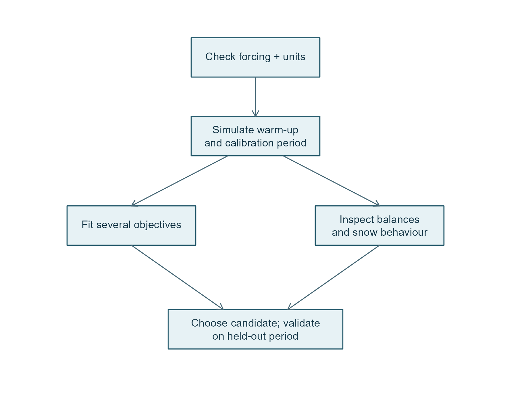
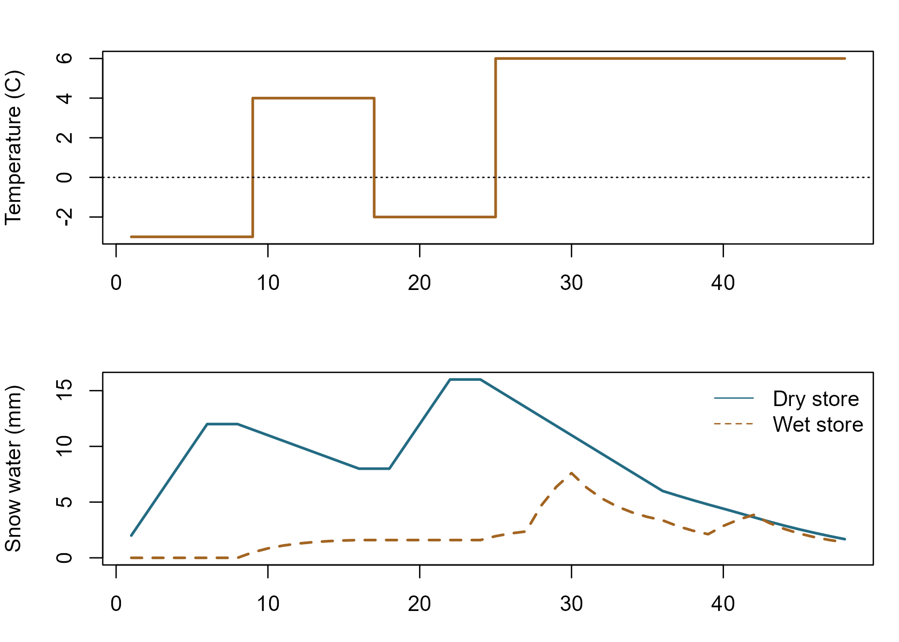
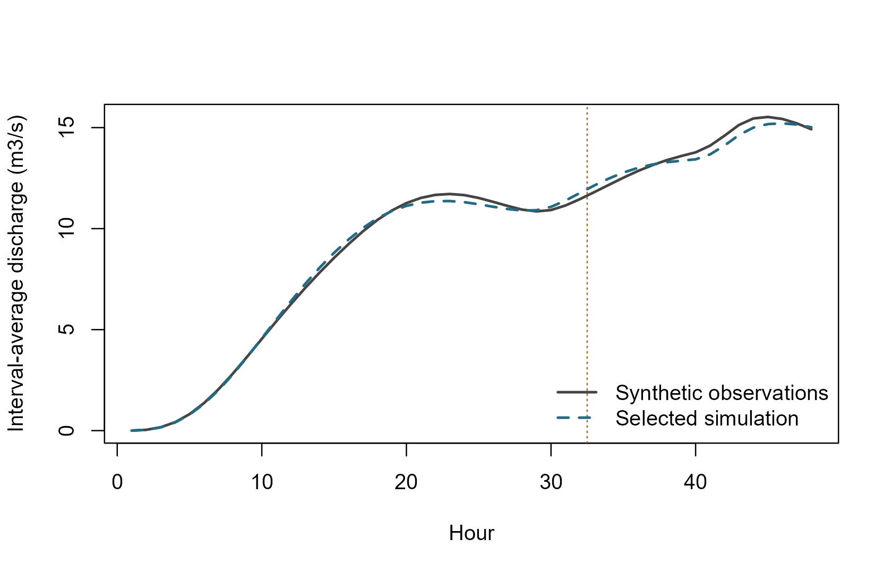

Worked example: snow, flow, calibration and restart
pdmS7 documentation
example-workflow.RmdWhat this example demonstrates
This is a complete, reproducible synthetic example: 48 hourly intervals with snow accumulation, thaw and rain. It needs no downloads. We create synthetic observations, fit two parameters using only the first 32 hours, then evaluate the remaining 16 hours without resetting the stores. The tiny calibration budget keeps the vignette quick; it is not a recommended operational budget.

Calibration and physical diagnostics are complementary checks. Held-out observations are not used to fit or select parameters in this example.
1. Construct and check the forcing
hour <- seq_len(48)
forcing <- data.frame(
time = seq(as.POSIXct("2020-01-01 01:00:00", tz = "UTC"),
by = "hour", length.out = 48
),
rain = rep(0, 48),
pet = rep(0.02, 48),
temperature_c = c(rep(-3, 8), rep(4, 8), rep(-2, 8), rep(6, 24))
)
forcing$rain[c(1:6, 19:22)] <- 2
forcing$rain[c(28:30, 40:42)] <- 3
stopifnot(
!anyNA(forcing), all(forcing$rain >= 0), all(forcing$pet >= 0),
all(as.numeric(diff(forcing$time), units = "hours") == 1)
)
head(forcing)
#> time rain pet temperature_c
#> 1 2020-01-01 01:00:00 2 0.02 -3
#> 2 2020-01-01 02:00:00 2 0.02 -3
#> 3 2020-01-01 03:00:00 2 0.02 -3
#> 4 2020-01-01 04:00:00 2 0.02 -3
#> 5 2020-01-01 05:00:00 2 0.02 -3
#> 6 2020-01-01 06:00:00 2 0.02 -3Here rain is total precipitation,
including snowfall, in mm per interval. Temperature is °C and PET is mm
per interval. Timestamps label interval ends. For real inputs, verify
time zone, duplicates, gaps, measurement units and alignment with gauged
discharge. Do not silently replace missing forcing with zero. The
simulator rejects missing inputs; missing observations are excluded from
metric calculations.
2. Configure and simulate
config <- list(pdm = pdm_presets("standard"), snow = pack_presets())
config$pdm$area_km2 <- 44
config$pdm$fc <- 1 # keep precipitation correction in one place
run_model <- function(cfg, rows, state = NULL, warmup = 0L) {
sim_snow_pdm(forcing$rain[rows], forcing$temperature_c[rows], forcing$pet[rows],
params = cfg, timestep_min = 60L, datetime = forcing$time[rows],
state = state, warmup_steps = warmup
)
}
initial_run <- run_model(config, hour, warmup = 8L)
attr(initial_run, "water_balance")
#> residual_mm max_abs_step_mm
#> -2.378306e-15 1.609823e-14
stopifnot(max(abs(initial_run$combined_balance_error_mm)) < 1e-8)The model starts with empty snow stores and PDM’s default half-full
soil. The first eight rows remain in the result with
is_warmup=TRUE. They are not deleted, and warm-up flags
alone do not establish state convergence. Real catchments generally need
a longer, representative warm-up assessment.

Synthetic forcing and the resulting snow stores. Liquid water can remain after the dry pack starts melting.
3. Create synthetic observations and reserve a validation period
For teaching purposes only, generate a reference hydrograph with a different melt factor, then add a small deterministic multiplicative perturbation. These values are not field observations and cannot establish model skill.
reference_config <- config
reference_config$snow$melt_factor_mmh_c <- 0.23
reference <- run_model(reference_config, hour)
observed_cms <- reference$qsim_cms * (1 + 0.03 * sin(hour / 3))
train <- 1:32
validate <- 33:484. Fit more than one objective
We minimize RMSE and absolute relative volume bias:
With user-chosen scales and nonnegative weights summing to one, each local search minimizes . The scale of 0.1 below means 10% volume bias contributes one scaled unit. These tolerances and bounds are illustrative; specify defensible ones for the catchment before fitting.
fit <- calibrate_pdm_multi(
config, forcing[train, ], observed_cms[train],
lower = c(snow.melt_factor_mmh_c = 0.08, pdm.surface.k1 = 0.5),
upper = c(snow.melt_factor_mmh_c = 0.35, pdm.surface.k1 = 4),
objectives = c("rmse", "abs_bias"),
scales = c(rmse = 1, abs_bias = 0.1),
weights = rbind(c(rmse = 1, abs_bias = 0), c(rmse = 0.5, abs_bias = 0.5)),
n_samples = 3L, starts = 1L, seed = 42L, warmup = 8L,
control = list(maxit = 3)
)
fit$pareto[, c(
"snow.melt_factor_mmh_c", "pdm.surface.k1",
"loss_rmse", "loss_abs_bias"
), with = FALSE]
#> snow.melt_factor_mmh_c pdm.surface.k1 loss_rmse loss_abs_bias
#> <num> <num> <num> <num>
#> 1: 0.2286652 1.977475 0.2092782 6.365200e-04
#> 2: 0.2289352 1.980975 0.2092114 7.456458e-04
#> 3: 0.2290269 2.004397 0.2087808 7.460150e-04
#> 4: 0.2292969 2.007897 0.2087209 8.551708e-04
#> 5: 0.2304737 2.112084 0.2069088 1.188830e-03
#> 6: 0.2307437 2.115584 0.2068828 1.299277e-03
#> 7: 0.2400500 3.470852 0.1914300 3.675045e-03
#> 8: 0.2270754 1.963278 0.2097238 1.658277e-05
#> 9: 0.2273454 1.966778 0.2096086 9.251524e-05
vapply(fit$optimization, function(x) x$convergence, integer(1))
#> [1] 1 1A nonzero convergence code needs inspection; this deliberately short
example may stop at the iteration limit. fit$archive
retains valid evaluated candidates, and fit$configs aligns
with rows of fit$pareto. The reported compromise uses the
last weight row, not the held-out observations. The
Pareto front is only the nondominated set among evaluated candidates; it
is not a global-optimum claim or a probability distribution. Weighted
searches may miss nonconvex trade-offs. Use more starts, larger budgets
and repeated seeds for real studies.
Other available losses are log_rmse,
nse_loss, kge_loss and
peak_relative_error. The last compares window maxima, not
peak timing or individual events. NSE/KGE need variable observations.
Prefer fewer, identifiable parameters over fitting every available
coefficient to a short record.
5. Restart into validation without reinitialising
chosen <- fit$compromise$config
training_run <- run_model(chosen, train, warmup = 8L)
checkpoint <- attr(training_run, "final_state")
validation_run <- run_model(chosen, validate, state = checkpoint)
full_run <- run_model(chosen, hour)
stopifnot(isTRUE(all.equal(validation_run$qsim_cms, full_run$qsim_cms[validate])))
scores <- rbind(
training = pdm_objectives(training_run$qsim_cms, observed_cms[train],
c("rmse", "log_rmse", "nse_loss", "abs_bias"),
warmup = 8L
),
validation = pdm_objectives(
validation_run$qsim_cms, observed_cms[validate],
c("rmse", "log_rmse", "nse_loss", "abs_bias")
)
)
scores
#> rmse log_rmse nse_loss abs_bias
#> training 0.2097238 0.02064797 0.007428045 1.658277e-05
#> validation 0.3103225 0.02215528 0.065685090 8.887364e-03
attr(validation_run, "water_balance")
#> residual_mm max_abs_step_mm
#> 1.537659e-14 7.549517e-15nse_loss is
,
so smaller is better; it is not NSE itself. The validation record here
is tiny and synthetic. Real acceptance should include independent
seasons, snow events, low flows, peak timing and water balance. Do not
repeatedly choose candidates against the same held-out period and still
call that period independent validation.

Synthetic discharge comparison. The dashed line marks the start of the held-out period; those observations were not supplied to calibration.
6. Save the complete restart context
checkpoint_path <- tempfile(fileext = ".rds")
saveRDS(list(
package_version = as.character(packageVersion("pdmS7")),
config = chosen, timestep_min = 60L,
last_time = tail(forcing$time[train], 1), state = checkpoint
), checkpoint_path)
restored <- readRDS(checkpoint_path)
stopifnot(isTRUE(all.equal(restored$state, checkpoint)))
resumed <- run_model(restored$config, validate, state = restored$state)
stopifnot(isTRUE(all.equal(resumed$qsim_cms, validation_run$qsim_cms)))
unlink(checkpoint_path)For a real run, use a caller-managed persistent path. Check the recorded version, configuration, timestep and last timestamp before reuse: this saved list is an example convention, not an automated compatibility validator. Both snow cover history and PDM delay queues must be preserved. Never reset to empty snow halfway through a thaw or change a model’s structure while reusing its state.
Before pseudo-operational use
- Confirm the image preset’s assumed hourly units and snow-cover event conventions.
- Replace synthetic data with checked forcing and correctly aligned observations.
- Assess warm-up, parameter identifiability and timestep sensitivity.
- Review convergence, rejected evaluations and each objective separately.
- Obtain independent technical/scientific review and responsible maintainer sign-off.
River-network routing and additional state assimilation remain future
avenues; this workflow does not implement them. See the PDM and PACK
companion vignettes for equations and component functions, and
docs/roadmap.md for deferred work.